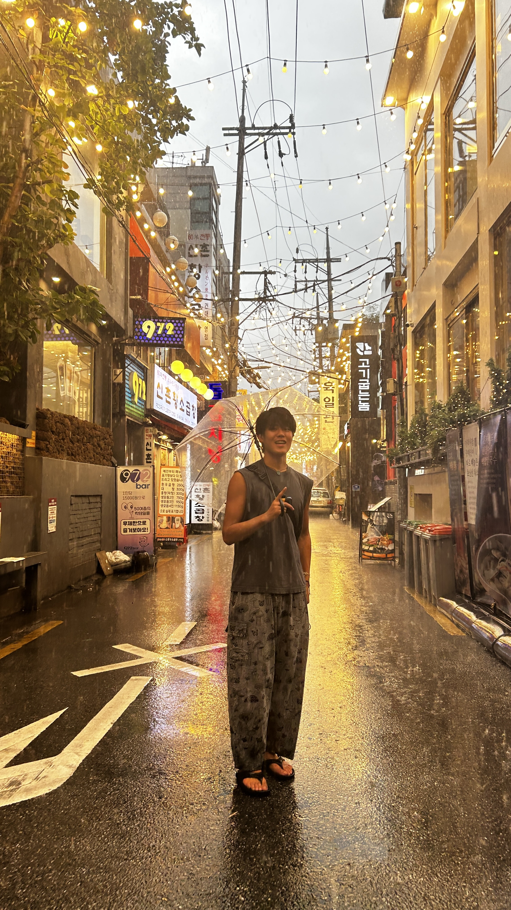

Not another language app — and not a dusty textbook. Live 1-on-1 lessons with a native tutor, plus AI that personalizes your prep, homework, and review between sessions.

Shinchon, SeoulI'm a native Japanese speaker who fell for languages by traveling. I know the feeling of standing in a new city, umbrella in hand, trying to read every sign around you — that mix of excitement and "where do I even start?" My job is to turn that feeling into confidence.
I teach the Japanese people actually use — in cafés, on trains, in anime, and with friends — not just textbook lines. My style is relaxed and encouraging: we talk, we laugh, we fix mistakes gently, and you leave every lesson able to say something new.
Whether you love anime or have a trip booked, the goal is the same: speak naturally and enjoy the conversation.
Decode casual lines from shows you watch, talk about what you love, and understand more without subtitles.
Order food, ride trains, check into hotels, and ask for help without the panic of opening Google Translate.
Self-intro, small talk, and the confidence to keep chatting with Japanese friends — not just memorized lines.
Apps alone can't coach your pronunciation. Textbooks alone can't adapt to your anime obsession or your trip to Osaka. I combine live human teaching with AI tools that personalize everything in between.
Vocab drills, listening clips, and mini-quizzes matched to your next lesson theme.
Live 1-on-1 role-play, culture notes, and gentle correction with a native tutor.
Lesson notes, audio, and AI-assisted review sheets built from what you actually said.
Not an app. Not a textbook. A system.
Every student gets a different plan. After a free level check, I design your lesson flow, AI-assisted homework, and topics around what you actually want to do with Japanese.
Pace, topics, and speaking time adjusted to your level.
Custom PDF notes, vocab lists, and audio after every session.
Pick a goal track and lesson themes below.
Three skill levels, four goal tracks, and eight lesson themes. Start anywhere; I personalize every step.
Choose the program that matches your dream — or tell me your own.
Trains, hotels, cafés, shopping.
Casual Japanese from real anime, music & fan culture.
Introduce yourself naturally and keep conversations going.
JLPT prep, business basics, family visits, a specific hobby?
Each Premium-style program runs four focused sessions with a before/after check and optional certificate.
Level diagnosis, goal setting & trust-building mini lesson
Key phrases for your track + first role-play wins
Deeper practice & real-world application scenarios
Full role-play, growth report & next-step roadmap
Each 60-min lesson follows a proven frame. You pick the theme; I adapt it to your level.
Structured enough to progress, flexible enough to match your level and theme.
Everything is tailored to your level and interests — no generic textbook grind.
Personalized PDF notes and vocab lists sent after every lesson.
Recordings so you can practice natural sounds between sessions.
Learn through anime, music, travel scenarios and real situations.
Light, focused practice with feedback to keep momentum going.
Not a sales pitch — a structured assessment so you leave with clarity on where you are and what to do next.
You'll receive a personalized study plan and recommended track after the session.
Try a lesson risk-free, then choose single sessions or a discounted bundle.
A relaxed intro session to meet, check your level and set your goals.
A gentle weekly rhythm to build a steady habit.
Twice-weekly momentum with a plan built around you.
Fastest progress for serious learners.
Prefer to pay as you go? Single 50-min lesson — $36 (≈¥5,800), no subscription.
Prices in USD (¥ shown at approximate rates). Save 10% when you pay yearly. Lessons online via Zoom or Google Meet.
Send the form below with a few times that suit you (and your time zone). I'll reply within 24 hours to confirm.
No. Complete beginners are welcome.
Zoom or Google Meet.
Yes. Your plan evolves with you.
AI helps with prep and review. Live conversation is always with your tutor.
Reschedule with 24 hours notice.
Track D can include JLPT N5–N3 support with a conversation-first focus.
Not sure which plan fits, or have a special request? Send a message and I'll reply personally.
Usually within 24 hours.